Fusionchart의 'Multi Series' 타입을 확인할 수 있는 예제입니다. 차트의 타입은 'changeType' 메소드를 사용하여 설정할 수 있습니다.
이 예제의 Fusion Chart 버전은 3.19입니다.
FusionChart 가이드 : https://www.fusioncharts.com/dev/fusioncharts
FusionChart의 타입 목록 : https://www.fusioncharts.com/dev/chart-guide/list-of-charts/
스크립트로 'Multi Series' 타입 변경하기
화면에 'Multi Series' 차트 타입이 Radio로 구성되어 있습니다. 항목을 선택(클릭)하면 차트 타입이 변경됩니다.
1
CASE 1. 'Multi-series Column 2D' 타입
Image 1.브라우저(Chrome) 실행 예시 - 'Multi-series Column 2D' 타입
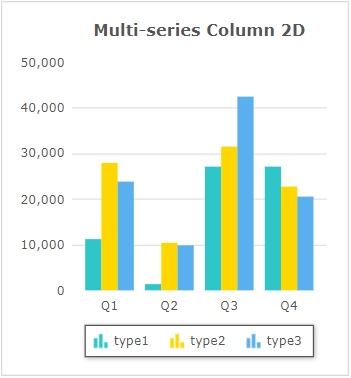
2
CASE 2. 'Multi-series Column 3D' 타입
Image 2.브라우저(Chrome) 실행 예시 - 'Multi-series Column 3D' 타입
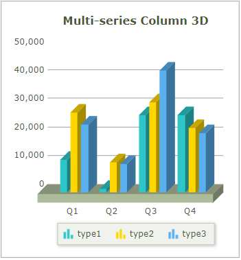
3
CASE 3. 'Multi-series Line 2D' 타입
Image 3.브라우저(Chrome) 실행 예시 - 'Multi-series Line 2D' 타입
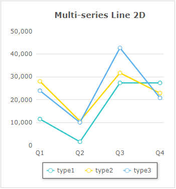
4
CASE 4. 'Multi-series Bar 2D' 타입
Image 4.브라우저(Chrome) 실행 예시 - 'Multi-series Bar 2D' 타입
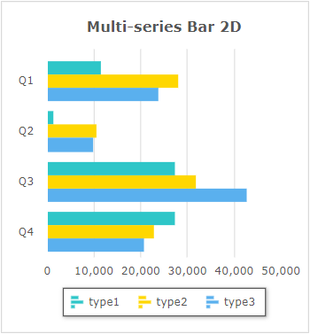
5
CASE 5. 'Multi-series Bar 3D' 타입
Image 5.브라우저(Chrome) 실행 예시 - 'Multi-series Bar 3D' 타입
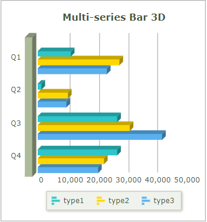
6
CASE 6. 'Overlapped Column 2D' 타입
Image 6.브라우저(Chrome) 실행 예시 - 'Overlapped Column 2D' 타입
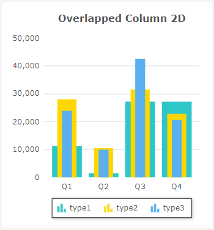
7
CASE 7. 'Overlapped Bar 2D' 타입
Image 7.브라우저(Chrome) 실행 예시 - 'Overlapped Bar 2D' 타입
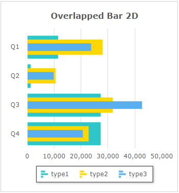
8
CASE 8. 'Multi-series Area 2D' 타입
Image 8.브라우저(Chrome) 실행 예시 - 'Multi-series Area 2D' 타입
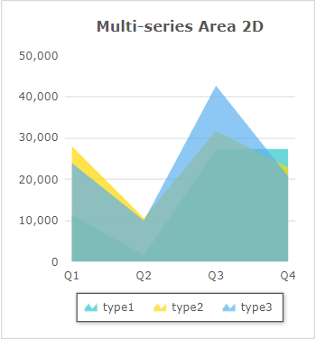
9
CASE 9. 'Marimekko' 타입
Image 9.브라우저(Chrome) 실행 예시 - 'Marimekko' 타입
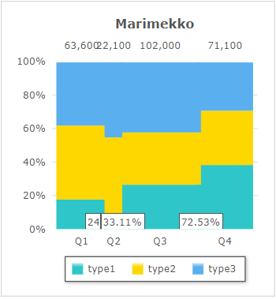
10
CASE 10. 'Zoom Line' 타입
Image 10.브라우저(Chrome) 실행 예시 - 'Zoom Line' 타입
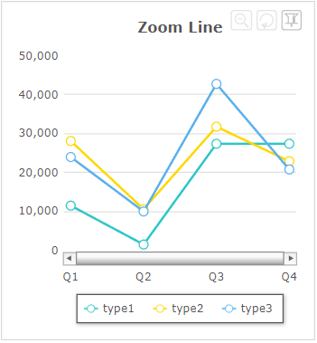
11
CASE 11. 'Zoom Line DY' 타입
Image 11.브라우저(Chrome) 실행 예시 - 'Zoom Line DY' 타입
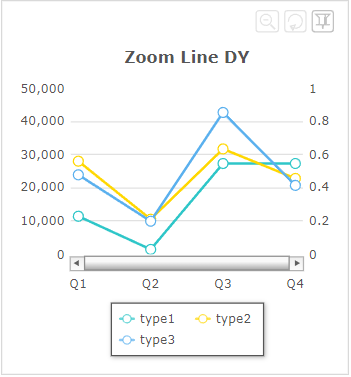
FusionChart의 'changeType' 메소드를 사용하여 스크립트를 작성합니다.
Example 1.Script
// 'Multi Series' 타입 변경 예시 // Fusionchart 'cht_exam1'의 차트 타입을 'Multi-series Column 2D'로 변경합니다. cht_exam1.changeType('mscolumn2d'); // Fusionchart 'cht_exam1'의 차트 타입을 'Multi-series Column 3D'로 변경합니다. cht_exam1.changeType('mscolumn3d'); // Fusionchart 'cht_exam1'의 차트 타입을 'Multi-series Line 2D'로 변경합니다. cht_exam1.changeType('msline'); // Fusionchart 'cht_exam1'의 차트 타입을 'Multi-series Bar 2D'로 변경합니다. cht_exam1.changeType('msbar2d'); // Fusionchart 'cht_exam1'의 차트 타입을 'Multi-series Bar 3D'로 변경합니다. cht_exam1.changeType('msbar3d'); // Fusionchart 'cht_exam1'의 차트 타입을 'Overlapped Column 2D'로 변경합니다. cht_exam1.changeType('overlappedcolumn2d'); // Fusionchart 'cht_exam1'의 차트 타입을 'Overlapped Bar 2D'로 변경합니다. cht_exam1.changeType('overlappedbar2d'); // Fusionchart 'cht_exam1'의 차트 타입을 'Multi-series Area 2D'로 변경합니다. cht_exam1.changeType('msarea'); // Fusionchart 'cht_exam1'의 차트 타입을 'Marimekko'로 변경합니다. cht_exam1.changeType('marimekko'); // Fusionchart 'cht_exam1'의 차트 타입을 'Zoom Line'으로 변경합니다. cht_exam1.changeType('zoomline'); // Fusionchart 'cht_exam1'의 차트 타입을 'Zoom Line DY'로 변경합니다. cht_exam1.changeType('zoomlinedy');
Example 2.Source
<w2:fusionchart chartType="MSColumn2D" drawType="javascript" id="cht_exam1" labelNode="quarter" ref="data:dlt_chartData_1" seriesColumns="[['type1','type2','type3']]" style="height: 300px;min-width:200px;"> </w2:fusionchart>
Example 3.DataList 'dlt_chartData_1'의 JSON 유형의 데이터
[
{
"quarter": "Q1",
"type1": "11500",
"type2": "28110",
"type3": "23990"
},
{
"quarter": "Q2",
"type1": "1500",
"type2": "10600",
"type3": "10000"
},
{
"quarter": "Q3",
"type1": "27400",
"type2": "31800",
"type3": "42800"
},
{
"quarter": "Q4",
"type1": "27400",
"type2": "22900",
"type3": "20800"
}
]chartType ( chartType )
setChartAttribute( options )
draw( )